Table of Contents
4. Frequency Distributions
4.1. Frequency Distributions for Quantitative Data
4.1.1. Guidelines for Plotting Frequency Distributions
4.1.2. Outliers
4.1.3. Relative Frequency Distributions
4.1.4. Cumulative Frequency Distributions
4.1.5. Graphs for Quantitative Data
4.1.6. Typical Shapes
4.1.7. Z-Scores and Location in a Distribution
4.2. Frequency Distributions for Qualitative Data
4.2.1. Describing Qualitative Data
4.2.2. Interpreting Distributions Constructed by Others
4.2.3. Graphs of Qualitative Data
4.2.4. Misleading Graphs
4.2.5. Do It Yourself: Plotting Qualitative Frequency Distributions
4.2.6. Summation Notation
4.2.7. Graphing Bivariate Relationships
4. Frequency Distributions
4.1. Frequency Distributions for Quantitative Data
4.1.1. Guidelines for Plotting Frequency Distributions
The frequency distribution of events is the number of times each event occurred in an experiment or study.
Learning Objective
Define statistical frequency and illustrate how it can be depicted graphically.
Key Points
- Frequency distributions can be displayed in a table, histogram, line graph, dot plot, or a pie chart, just to name a few.
- A histogram is a graphical representation of tabulated frequencies, shown as adjacent rectangles, erected over discrete intervals (bins), with an area equal to the frequency of the observations in the interval.
- There is no "best" number of bins, and different bin sizes can reveal different features of the data.
- Frequency distributions can be displayed in a table, histogram, line graph, dot plot, or a pie chart, to just name a few.
Key Terms
- frequency
- number of times an event occurred in an experiment (absolute frequency)
- histogram
- a representation of tabulated frequencies, shown as adjacent rectangles, erected over discrete intervals (bins), with an area equal to the frequency of the observations in the interval
In statistics, the frequency (or absolute frequency) of an event is the number of times the event occurred in an experiment or study. These frequencies are often graphically represented in histograms. The relative frequency (or empirical probability) of an event refers to the absolute frequency normalized by the total number of events. The values of all events can be plotted to produce a frequency distribution.
A histogram is a graphical representation of tabulated frequencies , shown as adjacent rectangles, erected over discrete intervals (bins), with an area equal to the frequency of the observations in the interval. The height of a rectangle is also equal to the frequency density of the interval, i.e., the frequency divided by the width of the interval. The total area of the histogram is equal to the number of data. An example of the frequency distribution of letters of the alphabet in the English language is shown in the histogram in .
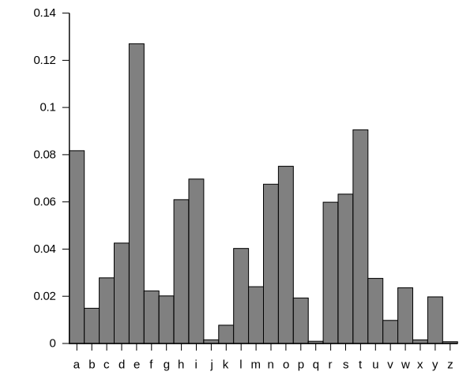{kind=link}
A typical distribution of letters in English language text.
A histogram may also be normalized displaying relative frequencies. It then shows the proportion of cases that fall into each of several categories, with the total area equaling 1. The categories are usually specified as consecutive, non-overlapping intervals of a variable. The categories (intervals) must be adjacent, and often are chosen to be of the same size. The rectangles of a histogram are drawn so that they touch each other to indicate that the original variable is continuous.
There is no "best" number of bins, and different bin sizes can reveal different features of the data. Some theoreticians have attempted to determine an optimal number of bins, but these methods generally make strong assumptions about the shape of the distribution. Depending on the actual data distribution and the goals of the analysis, different bin widths may be appropriate, so experimentation is usually needed to determine an appropriate width.
4.1.2. Outliers
In statistics, an outlier is an observation that is numerically distant from the rest of the data.
Learning Objective
Discuss outliers in terms of their causes and consequences, identification, and exclusion.
Key Points
- Outliers can occur by chance, by human error, or by equipment malfunction.
- Outliers may be indicative of a non-normal distribution, or they may just be natural deviations that occur in a large sample.
- Unless it can be ascertained that the deviation is not significant, it is not wise to ignore the presence of outliers.
- There is no rigid mathematical definition of what constitutes an outlier; thus, determining whether or not an observation is an outlier is ultimately a subjective experience.
Key Terms
- skewed
- Biased or distorted (pertaining to statistics or information).
- standard deviation
- a measure of how spread out data values are around the mean, defined as the square root of the variance
- interquartile range
- The difference between the first and third quartiles; a robust measure of sample dispersion.
What is an Outlier?
In statistics, an outlier is an observation that is numerically distant from the rest of the data. Outliers can occur by chance in any distribution, but they are often indicative either of measurement error or of the population having a heavy-tailed distribution. In the former case, one wishes to discard the outliers or use statistics that are robust against them. In the latter case, outliers indicate that the distribution is skewed and that one should be very cautious in using tools or intuitions that assume a normal distribution.
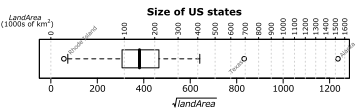{kind=link}
This box plot shows where the US states fall in terms of their size. Rhode Island, Texas, and Alaska are outside the normal data range, and therefore are considered outliers in this case.
In most larger samplings of data, some data points will be further away from the sample mean than what is deemed reasonable. This can be due to incidental systematic error or flaws in the theory that generated an assumed family of probability distributions, or it may be that some observations are far from the center of the data. Outlier points can therefore indicate faulty data, erroneous procedures, or areas where a certain theory might not be valid. However, in large samples, a small number of outliers is to be expected, and they typically are not due to any anomalous condition.
Outliers, being the most extreme observations, may include the sample maximum or sample minimum, or both, depending on whether they are extremely high or low. However, the sample maximum and minimum are not always outliers because they may not be unusually far from other observations.
Interpretations of statistics derived from data sets that include outliers may be misleading. For example, imagine that we calculate the average temperature of 10 objects in a room. Nine of them are between 20° and 25° Celsius, but an oven is at 175°C. In this case, the median of the data will be between 20° and 25°C, but the mean temperature will be between 35.5° and 40 °C. The median better reflects the temperature of a randomly sampled object than the mean; however, interpreting the mean as "a typical sample", equivalent to the median, is incorrect. This case illustrates that outliers may be indicative of data points that belong to a different population than the rest of the sample set. Estimators capable of coping with outliers are said to be robust. The median is a robust statistic, while the mean is not.
Causes for Outliers
Outliers can have many anomalous causes. For example, a physical apparatus for taking measurements may have suffered a transient malfunction, or there may have been an error in data transmission or transcription. Outliers can also arise due to changes in system behavior, fraudulent behavior, human error, instrument error or simply through natural deviations in populations. A sample may have been contaminated with elements from outside the population being examined. Alternatively, an outlier could be the result of a flaw in the assumed theory, calling for further investigation by the researcher.
Unless it can be ascertained that the deviation is not significant, it is ill-advised to ignore the presence of outliers. Outliers that cannot be readily explained demand special attention.
Identifying Outliers
There is no rigid mathematical definition of what constitutes an outlier. Thus, determining whether or not an observation is an outlier is ultimately a subjective exercise. Model-based methods, which are commonly used for identification, assume that the data is from a normal distribution and identify observations which are deemed "unlikely" based on mean and standard deviation. Other methods flag observations based on measures such as the interquartile range (IQR). For example, some people use the $1.5 \cdot \text{IQR}$ rule. This defines an outlier to be any observation that falls $1.5 \cdot \text{IQR}$ below the first quartile or any observation that falls $1.5 \cdot \text{IQR}$ above the third quartile.
Working With Outliers
Deletion of outlier data is a controversial practice frowned on by many scientists and science instructors. While mathematical criteria provide an objective and quantitative method for data rejection, they do not make the practice more scientifically or methodologically sound -- especially in small sets or where a normal distribution cannot be assumed. Rejection of outliers is more acceptable in areas of practice where the underlying model of the process being measured and the usual distribution of measurement error are confidently known. An outlier resulting from an instrument reading error may be excluded, but it is desirable that the reading is at least verified.
Even when a normal distribution model is appropriate to the data being analyzed, outliers are expected for large sample sizes and should not automatically be discarded if that is the case. The application should use a classification algorithm that is robust to outliers to model data with naturally occurring outlier points. Additionally, the possibility should be considered that the underlying distribution of the data is not approximately normal, but rather skewed.
4.1.3. Relative Frequency Distributions
A relative frequency is the fraction or proportion of times a value occurs in a data set.
Learning Objective
Define relative frequency and construct a relative frequency distribution.
Key Points
- To find the relative frequencies, divide each frequency by the total number of data points in the sample.
- Relative frequencies can be written as fractions, percents, or decimals. The column should add up to 1 (or 100%).
- The only difference between a relative frequency distribution graph and a frequency distribution graph is that the vertical axis uses proportional or relative frequency rather than simple frequency.
- Cumulative relative frequency (also called an ogive) is the accumulation of the previous relative frequencies.
Key Terms
- cumulative relative frequency
- the accumulation of the previous relative frequencies
- relative frequency
- the fraction or proportion of times a value occurs
- histogram
- a representation of tabulated frequencies, shown as adjacent rectangles, erected over discrete intervals (bins), with an area equal to the frequency of the observations in the interval
What is a Relative Frequency Distribution?
A relative frequency is the fraction or proportion of times a value occurs. To find the relative frequencies, divide each frequency by the total number of data points in the sample. Relative frequencies can be written as fractions, percents, or decimals.
How to Construct a Relative Frequency Distribution
Constructing a relative frequency distribution is not that much different than from constructing a regular frequency distribution. The beginning process is the same, and the same guidelines must be used when creating classes for the data. Recall the following:
- Each data value should fit into one class only (classes are mutually exclusive).
- The classes should be of equal size.
- Classes should not be open-ended.
- Try to use between 5 and 20 classes.
Create the frequency distribution table, as you would normally. However, this time, you will need to add a third column. The first column should be labeled Class or Category. The second column should be labeled Frequency. The third column should be labeled Relative Frequency. Fill in your class limits in column one. Then, count the number of data points that fall in each class and write that number in column two.
Next, start to fill in the third column. The entries will be calculated by dividing the frequency of that class by the total number of data points. For example, suppose we have a frequency of 5 in one class, and there are a total of 50 data points. The relative frequency for that class would be calculated by the following:
You can choose to write the relative frequency as a decimal (0.10), as a fraction ($\frac{1}{10}$ ), or as a percent (10%). Since we are dealing with proportions, the relative frequency column should add up to 1 (or 100%). It may be slightly off due to rounding.
Relative frequency distributions is often displayed in histograms and in frequency polygons. The only difference between a relative frequency distribution graph and a frequency distribution graph is that the vertical axis uses proportional or relative frequency rather than simple frequency.
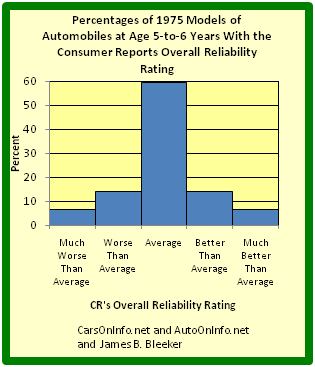{kind=link}
This graph shows a relative frequency histogram. Notice the vertical axis is labeled with percentages rather than simple frequencies.
Cumulative Relative Frequency Distributions
Just like we use cumulative frequency distributions when discussing simple frequency distributions, we often use cumulative frequency distributions when dealing with relative frequency as well. Cumulative relative frequency (also called an ogive) is the accumulation of the previous relative frequencies. To find the cumulative relative frequencies, add all the previous relative frequencies to the relative frequency for the current row.
4.1.4. Cumulative Frequency Distributions
A cumulative frequency distribution displays a running total of all the preceding frequencies in a frequency distribution.
Learning Objective
Define cumulative frequency and construct a cumulative frequency distribution.
Key Points
- To create a cumulative frequency distribution, start by creating a regular frequency distribution with one extra column added.
- To complete the cumulative frequency column, add all the frequencies at that class and all preceding classes.
- Cumulative frequency distributions are often displayed in histograms and in frequency polygons.
Key Terms
- histogram
- a representation of tabulated frequencies, shown as adjacent rectangles, erected over discrete intervals (bins), with an area equal to the frequency of the observations in the interval
- frequency distribution
- a representation, either in a graphical or tabular format, which displays the number of observations within a given interval
What is a Cumulative Frequency Distribution?
A cumulative frequency distribution is the sum of the class and all classes below it in a frequency distribution. Rather than displaying the frequencies from each class, a cumulative frequency distribution displays a running total of all the preceding frequencies.
How to Construct a Cumulative Frequency Distribution
Constructing a cumulative frequency distribution is not that much different than constructing a regular frequency distribution. The beginning process is the same, and the same guidelines must be used when creating classes for the data. Recall the following:
- Each data value should fit into one class only (classes are mutually exclusive).
- The classes should be of equal size.
- Classes should not be open-ended.
- Try to use between 5 and 20 classes.
Create the frequency distribution table, as you would normally. However, this time, you will need to add a third column. The first column should be labeled Class or Category. The second column should be labeled Frequency. The third column should be labeled Cumulative Frequency. Fill in your class limits in column one. Then, count the number of data points that falls in each class and write that number in column two.
Next, start to fill in the third column. The first entry will be the same as the first entry in the Frequency column. The second entry will be the sum of the first two entries in the Frequency column, the third entry will be the sum of the first three entries in the Frequency column, etc. The last entry in the Cumulative Frequency column should equal the number of total data points, if the math has been done correctly.
Graphical Displays of Cumulative Frequency Distributions
There are a number of ways in which cumulative frequency distributions can be displayed graphically. Histograms are common , as are frequency polygons . Frequency polygons are a graphical device for understanding the shapes of distributions. They serve the same purpose as histograms, but are especially helpful in comparing sets of data.
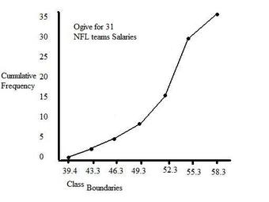{kind=link}
This graph shows an example of a cumulative frequency polygon.
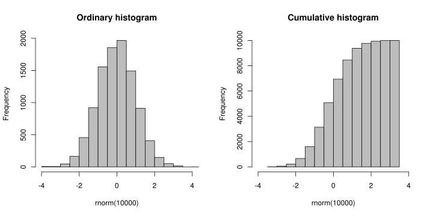{kind=link}
This image shows the difference between an ordinary histogram and a cumulative frequency histogram.
4.1.5. Graphs for Quantitative Data
A plot is a graphical technique for representing a data set, usually as a graph showing the relationship between two or more variables.
Learning Objective
Identify common plots used in statistical analysis.
Key Points
- Graphical procedures such as plots are used to gain insight into a data set in terms of testing assumptions, model selection, model validation, estimator selection, relationship identification, factor effect determination, or outlier detection.
- Statistical graphics give insight into aspects of the underlying structure of the data.
- Graphs can also be used to solve some mathematical equations, typically by finding where two plots intersect.
Key Terms
- histogram
- a representation of tabulated frequencies, shown as adjacent rectangles, erected over discrete intervals (bins), with an area equal to the frequency of the observations in the interval
- plot
- a graph or diagram drawn by hand or produced by a mechanical or electronic device
- scatter plot
- A type of display using Cartesian coordinates to display values for two variables for a set of data.
A plot is a graphical technique for representing a data set, usually as a graph showing the relationship between two or more variables. Graphs of functions are used in mathematics, sciences, engineering, technology, finance, and other areas where a visual representation of the relationship between variables would be useful. Graphs can also be used to read off the value of an unknown variable plotted as a function of a known one. Graphical procedures are also used to gain insight into a data set in terms of:
- testing assumptions,
- model selection,
- model validation,
- estimator selection,
- relationship identification,
- factor effect determination, or
- outlier detection.
Plots play an important role in statistics and data analysis. The procedures here can broadly be split into two parts: quantitative and graphical. Quantitative techniques are the set of statistical procedures that yield numeric or tabular output. Some examples of quantitative techniques include:
- hypothesis testing,
- analysis of variance,
- point estimates and confidence intervals, and
- least squares regression.
There are also many statistical tools generally referred to as graphical techniques which include:
- scatter plots ,
- histograms,
- probability plots,
- residual plots,
- box plots, and
- block plots.
Below are brief descriptions of some of the most common plots:
Scatter plot: This is a type of mathematical diagram using Cartesian coordinates to display values for two variables for a set of data. The data is displayed as a collection of points, each having the value of one variable determining the position on the horizontal axis and the value of the other variable determining the position on the vertical axis. This kind of plot is also called a scatter chart, scattergram, scatter diagram, or scatter graph.
Histogram: In statistics, a histogram is a graphical representation of the distribution of data. It is an estimate of the probability distribution of a continuous variable or can be used to plot the frequency of an event (number of times an event occurs) in an experiment or study.
Box plot: In descriptive statistics, a boxplot, also known as a box-and-whisker diagram, is a convenient way of graphically depicting groups of numerical data through their five-number summaries (the smallest observation, lower quartile (Q1), median (Q2), upper quartile (Q3), and largest observation). A boxplot may also indicate which observations, if any, might be considered outliers.
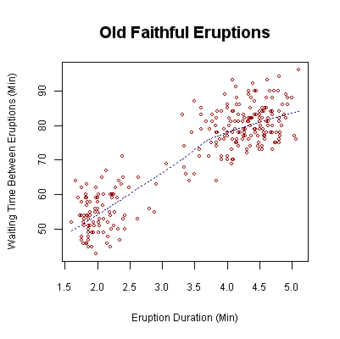{kind=link}
This is an example of a scatter plot, depicting the waiting time between eruptions and the duration of the eruption for the Old Faithful geyser in Yellowstone National Park, Wyoming, USA.
4.1.6. Typical Shapes
Distributions can be symmetrical or asymmetrical depending on how the data falls.
Learning Objective
Evaluate the shapes of symmetrical and asymmetrical frequency distributions.
Key Points
- A normal distribution is a symmetric distribution in which the mean and median are equal. Most data are clustered in the center.
- An asymmetrical distribution is said to be positively skewed (or skewed to the right) when the tail on the right side of the histogram is longer than the left side.
- An asymmetrical distribution is said to be negatively skewed (or skewed to the left) when the tail on the left side of the histogram is longer than the right side.
- Distributions can also be uni-modal, bi-modal, or multi-modal.
Key Terms
- skewness
- A measure of the asymmetry of the probability distribution of a real-valued random variable; is the third standardized moment, defined as where is the third moment about the mean and is the standard deviation.
- empirical rule
- That a normal distribution has 68% of its observations within one standard deviation of the mean, 95% within two, and 99.7% within three.
- standard deviation
- a measure of how spread out data values are around the mean, defined as the square root of the variance
Distribution Shapes
In statistics, distributions can take on a variety of shapes. Considerations of the shape of a distribution arise in statistical data analysis, where simple quantitative descriptive statistics and plotting techniques, such as histograms, can lead to the selection of a particular family of distributions for modelling purposes.
Symmetrical Distributions
In a symmetrical distribution, the two sides of the distribution are mirror images of each other. A normal distribution is an example of a truly symmetric distribution of data item values. When a histogram is constructed on values that are normally distributed, the shape of the columns form a symmetrical bell shape. This is why this distribution is also known as a "normal curve" or "bell curve. " In a true normal distribution, the mean and median are equal, and they appear in the center of the curve. Also, there is only one mode, and most of the data are clustered around the center. The more extreme values on either side of the center become more rare as distance from the center increases. About 68% of values lie within one standard deviation (σ) away from the mean, about 95% of the values lie within two standard deviations, and about 99.7% lie within three standard deviations . This is known as the empirical rule or the 3-sigma rule.
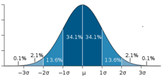{kind=link}
This image shows a normal distribution. About 68% of data fall within one standard deviation, about 95% fall within two standard deviations, and 99.7% fall within three standard deviations.
Asymmetrical Distributions
In an asymmetrical distribution, the two sides will not be mirror images of each other. Skewness is the tendency for the values to be more frequent around the high or low ends of the x-axis. When a histogram is constructed for skewed data, it is possible to identify skewness by looking at the shape of the distribution.
A distribution is said to be positively skewed (or skewed to the right) when the tail on the right side of the histogram is longer than the left side. Most of the values tend to cluster toward the left side of the x-axis (i.e., the smaller values) with increasingly fewer values at the right side of the x-axis (i.e., the larger values). In this case, the median is less than the mean .
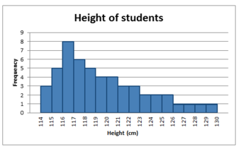{kind=link}
This distribution is said to be positively skewed (or skewed to the right) because the tail on the right side of the histogram is longer than the left side.
A distribution is said to be negatively skewed (or skewed to the left) when the tail on the left side of the histogram is longer than the right side. Most of the values tend to cluster toward the right side of the x-axis (i.e., the larger values), with increasingly less values on the left side of the x-axis (i.e., the smaller values). In this case, the median is greater than the mean .

This distribution is said to be negatively skewed (or skewed to the left) because the tail on the left side of the histogram is longer than the right side.
When data are skewed, the median is usually a more appropriate measure of central tendency than the mean.
Other Distribution Shapes
A uni-modal distribution occurs if there is only one "peak" (or highest point) in the distribution, as seen previously in the normal distribution. This means there is one mode (a value that occurs more frequently than any other) for the data. A bi-modal distribution occurs when there are two modes. Multi-modal distributions with more than two modes are also possible.
4.1.7. Z-Scores and Location in a Distribution
A $z$ -score is the signed number of standard deviations an observation is above the mean of a distribution.
Learning Objective
Define
Key Points
- A positive $z$ -score represents an observation above the mean, while a negative $z$ -score represents an observation below the mean.
- We obtain a $z$ -score through a conversion process known as standardizing or normalizing.
- $z$ -scores are most frequently used to compare a sample to a standard normal deviate (standard normal distribution, with $\mu = 0$ and $\sigma =1$ ).
- While $z$ -scores can be defined without assumptions of normality, they can only be defined if one knows the population parameters.
- $z$ -scores provide an assessment of how off-target a process is operating.
Key Terms
- Student's t-statistic
- a ratio of the departure of an estimated parameter from its notional value and its standard error
- z-score
- The standardized value of observation
$x$ from a distribution that has mean$\mu$ and standard deviation$\sigma$ . - raw score
- an original observation that has not been transformed to a
$z$ -score
A $z$ -score is the signed number of standard deviations an observation is above the mean of a distribution. Thus, a positive $z$ -score represents an observation above the mean, while a negative $z$ -score represents an observation below the mean. We obtain a $z$ -score through a conversion process known as standardizing or normalizing.
$z$ -scores are also called standard scores, $z$ -values, normal scores or standardized variables. The use of "$z$ " is because the normal distribution is also known as the "$z$ distribution." $z$ -scores are most frequently used to compare a sample to a standard normal deviate (standard normal distribution, with $\mu = 0$ and $\sigma =1$ ).
While $z$ -scores can be defined without assumptions of normality, they can only be defined if one knows the population parameters. If one only has a sample set, then the analogous computation with sample mean and sample standard deviation yields the Student's $t$ -statistic.
Calculation From a Raw Score
A raw score is an original datum, or observation, that has not been transformed. This may include, for example, the original result obtained by a student on a test (i.e., the number of correctly answered items) as opposed to that score after transformation to a standard score or percentile rank. The $z$ -score, in turn, provides an assessment of how off-target a process is operating.
The conversion of a raw score, $x$ , to a $z$ -score can be performed using the following equation:
where $\mu$ is the mean of the population and $\sigma$ is the standard deviation of the population. The absolute value of $z$ represents the distance between the raw score and the population mean in units of the standard deviation. $z$ is negative when the raw score is below the mean and positive when the raw score is above the mean.
A key point is that calculating $z$ requires the population mean and the population standard deviation, not the sample mean nor sample deviation. It requires knowing the population parameters, not the statistics of a sample drawn from the population of interest. However, in cases where it is impossible to measure every member of a population, the standard deviation may be estimated using a random sample.
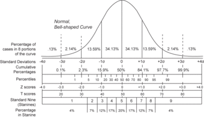{kind=link}
Shown here is a chart comparing the various grading methods in a normal distribution. $z$ -scores for this standard normal distribution can be seen in between percentiles and $t$ -scores.
4.2. Frequency Distributions for Qualitative Data
4.2.1. Describing Qualitative Data
Qualitative data is a categorical measurement expressed not in terms of numbers, but rather by means of a natural language description.
Learning Objective
Summarize the processes available to researchers that allow qualitative data to be analyzed similarly to quantitative data.
Key Points
- Observer impression is when expert or bystander observers examine the data, interpret it via forming an impression and report their impression in a structured and sometimes quantitative form.
- To discover patterns in qualitative data, one must try to find frequencies, magnitudes, structures, processes, causes, and consequences.
- The Ground Theory Method (GTM) is an inductive approach to research in which theories are generated solely from an examination of data rather than being derived deductively.
- Coding is an interpretive technique that both organizes the data and provides a means to introduce the interpretations of it into certain quantitative methods.
- Most coding requires the analyst to read the data and demarcate segments within it.
Key Terms
- nominal
- Having values whose order is insignificant.
- ordinal
- Of a number, indicating position in a sequence.
- qualitative analysis
- The numerical examination and interpretation of observations for the purpose of discovering underlying meanings and patterns of relationships.
Qualitative data is a categorical measurement expressed not in terms of numbers, but rather by means of a natural language description. In statistics, it is often used interchangeably with "categorical" data. When there is not a natural ordering of the categories, we call these nominal categories. Examples might be gender, race, religion, or sport.
When the categories may be ordered, these are called ordinal variables. Categorical variables that judge size (small, medium, large, etc.) are ordinal variables. Attitudes (strongly disagree, disagree, neutral, agree, strongly agree) are also ordinal variables; however, we may not know which value is the best or worst of these issues. Note that the distance between these categories is not something we can measure.
Qualitative Analysis
Qualitative Analysis is the numerical examination and interpretation of observations for the purpose of discovering underlying meanings and patterns of relationships. The most common form of qualitative qualitative analysis is observer impression—when an expert or bystander observers examine the data, interpret it via forming an impression and report their impression in a structured and sometimes quantitative form.
An important first step in qualitative analysis and observer impression is to discover patterns. One must try to find frequencies, magnitudes, structures, processes, causes, and consequences. One method of this is through cross-case analysis, which is analysis that involves an examination of more than one case. Cross-case analysis can be further broken down into variable-oriented analysis and case-oriented analysis. Variable-oriented analysis is that which describes and/or explains a particular variable, while case-oriented analysis aims to understand a particular case or several cases by looking closely at the details of each.
The Ground Theory Method (GTM) is an inductive approach to research, introduced by Barney Glaser and Anselm Strauss, in which theories are generated solely from an examination of data rather than being derived deductively. A component of the Grounded Theory Method is the constant comparative method, in which observations are compared with one another and with the evolving inductive theory.
Four Stages of the Constant Comparative Method
- comparing incident application to each category
- integrating categories and their properties
- delimiting the theory
- writing theory
Other methods of discovering patterns include semiotics and conversation analysis. Semiotics is the study of signs and the meanings associated with them. It is commonly associated with content analysis. Conversation analysis is a meticulous analysis of the details of conversation, based on a complete transcript that includes pauses and other non-verbal communication.
Conceptualization and Coding
In quantitative analysis, it is usually obvious what the variables to be analyzed are, for example, race, gender, income, education, etc. Deciding what is a variable, and how to code each subject on each variable, is more difficult in qualitative data analysis.
Concept formation is the creation of variables (usually called themes) out of raw qualitative data. It is more sophisticated in qualitative data analysis. Casing is an important part of concept formation. It is the process of determining what represents a case. Coding is the actual transformation of qualitative data into themes.
More specifically, coding is an interpretive technique that both organizes the data and provides a means to introduce the interpretations of it into certain quantitative methods. Most coding requires the analyst to read the data and demarcate segments within it, which may be done at different times throughout the process. Each segment is labeled with a "code" – usually a word or short phrase that suggests how the associated data segments inform the research objectives. When coding is complete, the analyst prepares reports via a mix of: summarizing the prevalence of codes, discussing similarities and differences in related codes across distinct original sources/contexts, or comparing the relationship between one or more codes.
Some qualitative data that is highly structured (e.g., close-end responses from surveys or tightly defined interview questions) is typically coded without additional segmenting of the content. In these cases, codes are often applied as a layer on top of the data. Quantitative analysis of these codes is typically the capstone analytical step for this type of qualitative data.
A frequent criticism of coding method is that it seeks to transform qualitative data into empirically valid data that contain actual value range, structural proportion, contrast ratios, and scientific objective properties. This can tend to drain the data of its variety, richness, and individual character. Analysts respond to this criticism by thoroughly expositing their definitions of codes and linking those codes soundly to the underlying data, therein bringing back some of the richness that might be absent from a mere list of codes.
Alternatives to Coding
Alternatives to coding include recursive abstraction and mechanical techniques. Recursive abstraction involves the summarizing of datasets. Those summaries are then further summarized and so on. The end result is a more compact summary that would have been difficult to accurately discern without the preceding steps of distillation.
Mechanical techniques rely on leveraging computers to scan and reduce large sets of qualitative data. At their most basic level, mechanical techniques rely on counting words, phrases, or coincidences of tokens within the data. Often referred to as content analysis, the output from these techniques is amenable to many advanced statistical analyses.
4.2.2. Interpreting Distributions Constructed by Others
Graphs of distributions created by others can be misleading, either intentionally or unintentionally.
Learning Objective
Demonstrate how distributions constructed by others may be misleading, either intentionally or unintentionally.
Key Points
- Misleading graphs will misrepresent data, constituting a misuse of statistics that may result in an incorrect conclusion being derived from them.
- Graphs can be misleading if they're used excessively, if they use the third dimensions where it is unnecessary, if they are improperly scaled, or if they're truncated.
- The use of biased or loaded words in the graph's title, axis labels, or caption may inappropriately prime the reader.
Key Terms
- bias
- (Uncountable) Inclination towards something; predisposition, partiality, prejudice, preference, predilection.
- distribution
- the set of relative likelihoods that a variable will have a value in a given interval
- truncate
- To shorten something as if by cutting off part of it.
Distributions Constructed by Others
Unless you are constructing a graph of a distribution on your own, you need to be very careful about how you read and interpret graphs. Graphs are made in order to display data; however, some people may intentionally try to mislead the reader in order to convey certain information.
In statistics, these types of graphs are called misleading graphs (or distorted graphs). They misrepresent data, constituting a misuse of statistics that may result in an incorrect conclusion being derived from them. Graphs may be misleading through being excessively complex or poorly constructed. Even when well-constructed to accurately display the characteristics of their data, graphs can be subject to different interpretation.
Misleading graphs may be created intentionally to hinder the proper interpretation of data, but can also be created accidentally by users for a variety of reasons including unfamiliarity with the graphing software, the misinterpretation of the data, or because the data cannot be accurately conveyed. Misleading graphs are often used in false advertising.
Types of Misleading Graphs
The use of graphs where they are not needed can lead to unnecessary confusion/interpretation. Generally, the more explanation a graph needs, the less the graph itself is needed. Graphs do not always convey information better than tables. This is often called excessive usage.
The use of biased or loaded words in the graph's title, axis labels, or caption may inappropriately prime the reader.
Pie charts can be especially misleading. Comparing pie charts of different sizes could be misleading as people cannot accurately read the comparative area of circles. The usage of thin slices which are hard to discern may be difficult to interpret. The usage of percentages as labels on a pie chart can be misleading when the sample size is small. A perspective (3D) pie chart is used to give the chart a 3D look. Often used for aesthetic reasons, the third dimension does not improve the reading of the data; on the contrary, these plots are difficult to interpret because of the distorted effect of perspective associated with the third dimension. In a 3D pie chart, the slices that are closer to the reader appear to be larger than those in the back due to the angle at which they're presented .
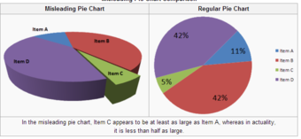{kind=link}
In the misleading pie chart, Item C appears to be at least as large as Item A, whereas in actuality, it is less than half as large.
When using pictogram in bar graphs, they should not be scaled uniformly as this creates a perceptually misleading comparison. The area of the pictogram is interpreted instead of only its height or width. This causes the scaling to make the difference appear to be squared .
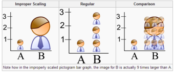{kind=link}
Note how in the improperly scaled pictogram bar graph, the image for B is actually 9 times larger than A.
A truncated graph has a y-axis that does not start at 0. These graphs can create the impression of important change where there is relatively little change .
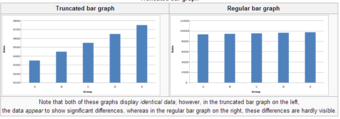{kind=link}
Note that both of these graphs display identical data; however, in the truncated bar graph on the left, the data appear to show significant differences, whereas in the regular bar graph on the right, these differences are hardly visible.
Usage in the Real World
Graphs are useful in the summary and interpretation of financial data. Graphs allow for trends in large data sets to be seen while also allowing the data to be interpreted by non-specialists. Graphs are often used in corporate annual reports as a form of impression management. In the United States, graphs do not have to be audited as they fall under AU Section 550 Other Information in Documents Containing Audited Financial Statements. Several published studies have looked at the usage of graphs in corporate reports for different corporations in different countries and have found frequent usage of improper design, selectivity, and measurement distortion within these reports. The presence of misleading graphs in annual reports have led to requests for standards to be set. Research has found that while readers with poor levels of financial understanding have a greater chance of being misinformed by misleading graphs, even those with financial understanding, such as loan officers, may be misled.
4.2.3. Graphs of Qualitative Data
Qualitative data can be graphed in various ways, including using pie charts and bar charts.
Learning Objective
Create a pie chart and bar chart representing qualitative data.
Key Points
- Since qualitative data represent individual categories, calculating descriptive statistics is limited. Mean, median, and measures of spread cannot be calculated; however, the mode can be calculated.
- One way in which we can graphically represent qualitative data is in a pie chart. Categories are represented by slices of the pie, whose areas are proportional to the percentage of items in that category.
- The key point about the qualitative data is that they do not come with a pre-established ordering (the way numbers are ordered).
- Bar charts can also be used to graph qualitative data. The Y axis displays the frequencies and the X axis displays the categories.
Key Term
- descriptive statistics
- A branch of mathematics dealing with summarization and description of collections of data sets, including the concepts of arithmetic mean, median, and mode.
Qualitative Data
Recall the difference between quantitative and qualitative data. Quantitative data are data about numeric values. Qualitative data are measures of types and may be represented as a name or symbol. Statistics that describe or summarize can be produced for quantitative data and to a lesser extent for qualitative data. As quantitative data are always numeric they can be ordered, added together, and the frequency of an observation can be counted. Therefore, all descriptive statistics can be calculated using quantitative data. As qualitative data represent individual (mutually exclusive) categories, the descriptive statistics that can be calculated are limited, as many of these techniques require numeric values which can be logically ordered from lowest to highest and which express a count. Mode can be calculated, as it it the most frequency observed value. Median, measures of shape, measures of spread such as the range and interquartile range, require an ordered data set with a logical low-end value and high-end value. Variance and standard deviation require the mean to be calculated, which is not appropriate for categorical variables as they have no numerical value.
Graphing Qualitative Data
There are a number of ways in which qualitative data can be displayed. A good way to demonstrate the different types of graphs is by looking at the following example:
When Apple Computer introduced the iMac computer in August 1998, the company wanted to learn whether the iMac was expanding Apple's market share. Was the iMac just attracting previous Macintosh owners? Or was it purchased by newcomers to the computer market, and by previous Windows users who were switching over? To find out, 500 iMac customers were interviewed. Each customer was categorized as a previous Macintosh owners, a previous Windows owner, or a new computer purchaser. The qualitative data results were displayed in a frequency table.
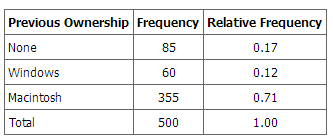{kind=link}
The frequency table shows how many people in the study were previous Mac owners, previous Windows owners, or neither.
The key point about the qualitative data is that they do not come with a pre-established ordering (the way numbers are ordered). For example, there is no natural sense in which the category of previous Windows users comes before or after the category of previous iMac users. This situation may be contrasted with quantitative data, such as a person's weight. People of one weight are naturally ordered with respect to people of a different weight.
Pie Charts
One way in which we can graphically represent this qualitative data is in a pie chart. In a pie chart, each category is represented by a slice of the pie. The area of the slice is proportional to the percentage of responses in the category. This is simply the relative frequency multiplied by 100. Although most iMac purchasers were Macintosh owners, Apple was encouraged by the 12% of purchasers who were former Windows users, and by the 17% of purchasers who were buying a computer for the first time .
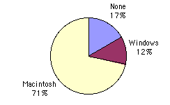{kind=link}
The pie chart shows how many people in the study were previous Mac owners, previous Windows owners, or neither.
Pie charts are effective for displaying the relative frequencies of a small number of categories. They are not recommended, however, when you have a large number of categories. Pie charts can also be confusing when they are used to compare the outcomes of two different surveys or experiments.
Here is another important point about pie charts. If they are based on a small number of observations, it can be misleading to label the pie slices with percentages. For example, if just 5 people had been interviewed by Apple Computers, and 3 were former Windows users, it would be misleading to display a pie chart with the Windows slice showing 60%. With so few people interviewed, such a large percentage of Windows users might easily have accord since chance can cause large errors with small samples. In this case, it is better to alert the user of the pie chart to the actual numbers involved. The slices should therefore be labeled with the actual frequencies observed (e.g., 3) instead of with percentages.
Bar Charts
Bar charts can also be used to represent frequencies of different categories . Frequencies are shown on the Y axis and the type of computer previously owned is shown on the X axis. Typically the Y-axis shows the number of observations rather than the percentage of observations in each category as is typical in pie charts.
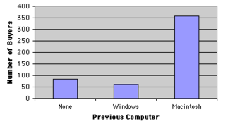{kind=link}
The bar chart shows how many people in the study were previous Mac owners, previous Windows owners, or neither.
4.2.4. Misleading Graphs
A misleading graph misrepresents data and may result in incorrectly derived conclusions.
Learning Objective
Criticize the practices of excessive usage, biased labeling, improper scaling, truncating, and the addition of a third dimension that often result in misleading graphs.
Key Points
- Misleading graphs may be created intentionally to hinder the proper interpretation of data, but can be also created accidentally by users for a variety of reasons.
- The use of graphs where they are not needed can lead to unnecessary confusion/interpretation. This is referred to as excessive usage.
- The use of biased or loaded words in the graph's title, axis labels, or caption may inappropriately sway the reader. This is called biased labeling.
- Graphs can also be misleading if they are improperly labeled, if they are truncated, if there is an axis change, if they lack a scale, or if they are unnecessarily displayed in the third dimension.
Key Terms
- pictogram
- a picture that represents a word or an idea by illustration; used often in graphs
- volatility
- the state of sharp and regular fluctuation
What is a Misleading Graph?
In statistics, a misleading graph, also known as a distorted graph, is a graph which misrepresents data, constituting a misuse of statistics and with the result that an incorrect conclusion may be derived from it. Graphs may be misleading through being excessively complex or poorly constructed. Even when well-constructed to accurately display the characteristics of their data, graphs can be subject to different interpretation.
Misleading graphs may be created intentionally to hinder the proper interpretation of data, but can be also created accidentally by users for a variety of reasons including unfamiliarity with the graphing software, the misinterpretation of the data, or because the data cannot be accurately conveyed. Misleading graphs are often used in false advertising. One of the first authors to write about misleading graphs was Darrell Huff, who published the best-selling book How to Lie With Statistics in 1954. It is still in print.
Excessive Usage
There are numerous ways in which a misleading graph may be constructed. The use of graphs where they are not needed can lead to unnecessary confusion/interpretation. Generally, the more explanation a graph needs, the less the graph itself is needed. Graphs do not always convey information better than tables.
Biased Labeling
The use of biased or loaded words in the graph's title, axis labels, or caption may inappropriately sway the reader.
Improper Scaling
When using pictogram in bar graphs, they should not be scaled uniformly as this creates a perceptually misleading comparison. The area of the pictogram is interpreted instead of only its height or width. This causes the scaling to make the difference appear to be squared.
{kind=link}
In the improperly scaled pictogram bar graph, the image for B is actually 9 times larger than A.
Truncated Graphs
A truncated graph has a y-axis that does not start at zero. These graphs can create the impression of important change where there is relatively little change.Truncated graphs are useful in illustrating small differences. Graphs may also be truncated to save space. Commercial software such as MS Excel will tend to truncate graphs by default if the values are all within a narrow range.
{kind=link}
Both of these graphs display identical data; however, in the truncated bar graph on the left, the data appear to show significant differences, whereas in the regular bar graph on the right, these differences are hardly visible.
Misleading 3D Pie Charts
A perspective (3D) pie chart is used to give the chart a 3D look. Often used for aesthetic reasons, the third dimension does not improve the reading of the data; on the contrary, these plots are difficult to interpret because of the distorted effect of perspective associated with the third dimension. The use of superfluous dimensions not used to display the data of interest is discouraged for charts in general, not only for pie charts. In a 3D pie chart, the slices that are closer to the reader appear to be larger than those in the back due to the angle at which they're presented .
{kind=link}
In the misleading pie chart, Item C appears to be at least as large as Item A, whereas in actuality, it is less than half as large.
Other Misleading Graphs
Graphs can also be misleading for a variety of other reasons. An axis change affects how the graph appears in terms of its growth and volatility. A graph with no scale can be easily manipulated to make the difference between bars look larger or smaller than they actually are. Improper intervals can affect the appearance of a graph, as well as omitting data. Finally, graphs can also be misleading if they are overly complex or poorly constructed.
Graphs in Finance and Corporate Reports
Graphs are useful in the summary and interpretation of financial data. Graphs allow for trends in large data sets to be seen while also allowing the data to be interpreted by non-specialists. Graphs are often used in corporate annual reports as a form of impression management. In the United States, graphs do not have to be audited. Several published studies have looked at the usage of graphs in corporate reports for different corporations in different countries and have found frequent usage of improper design, selectivity, and measurement distortion within these reports. The presence of misleading graphs in annual reports have led to requests for standards to be set. Research has found that while readers with poor levels of financial understanding have a greater chance of being misinformed by misleading graphs, even those with financial understanding, such as loan officers, may be misled.
4.2.5. Do It Yourself: Plotting Qualitative Frequency Distributions
Qualitative frequency distributions can be displayed in bar charts, Pareto charts, and pie charts.
Learning Objective
Outline the steps necessary to plot a frequency distribution for qualitative data.
Key Points
- The first step to plotting a qualitative frequency distributions is to create a frequency table.
- If drawing a bar graph or Pareto chart, first draw two axes. The y-axis is labeled with the frequency (or relative frequency) and the x-axis is labeled with the category.
- In bar graphs and Pareto graphs, draw rectangles of equal width and heights that correspond to their frequencies/relative frequencies.
- A pie chart shows the distribution in a different way, where each percentage is a slice of the pie.
Key Terms
- relative frequency distribution
- a representation, either in graphical or tabular format, which displays the fraction of observations in a certain category
- frequency distribution
- a representation, either in a graphical or tabular format, which displays the number of observations within a given interval
- Pareto chart
- a type of bar graph where where the bars are drawn in decreasing order of frequency or relative frequency
Ways to Organize Data
When data is collected from a survey or an experiment, they must be organized into a manageable form. Data that is not organized is referred to as raw data. A few different ways to organize data include tables, graphs, and numerical summaries.
One common way to organize qualitative, or categorical, data is in a frequency distribution. A frequency distribution lists the number of occurrences for each category of data.
Step-by-Step Guide to Plotting Qualitative Frequency Distributions
The first step towards plotting a qualitative frequency distribution is to create a table of the given or collected data. For example, let's say you want to determine the distribution of colors in a bag of Skittles. You open up a bag, and you find that there are 15 red, 7 orange, 7 yellow, 13 green, and 8 purple. Create a two column chart, with the titles of Color and Frequency, and fill in the corresponding data.
To construct a frequency distribution in the form of a bar graph, you must first draw two axes. The y-axis (vertical axis) should be labeled with the frequencies and the x-axis (horizontal axis) should be labeled with each category (in this case, Skittle color). The graph is completed by drawing rectangles of equal width for each color, each as tall as their frequency .
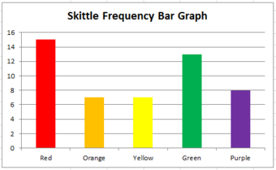{kind=link}
This graph shows the frequency distribution of a bag of Skittles.
Sometimes a relative frequency distribution is desired. If this is the case, simply add a third column in the table called Relative Frequency. This is found by dividing the frequency of each color by the total number of Skittles (50, in this case). This number can be written as a decimal, a percentage, or as a fraction. If we decided to use decimals, the relative frequencies for the red, orange, yellow, green, and purple Skittles are respectively 0.3, 0.14, 0.14, 0.26, and 0.16. The decimals should add up to 1 (or very close to it due to rounding). Bar graphs for relative frequency distributions are very similar to bar graphs for regular frequency distributions, except this time, the y-axis will be labeled with the relative frequency rather than just simply the frequency. A special type of bar graph where the bars are drawn in decreasing order of relative frequency is called a Pareto chart .
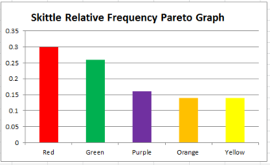{kind=link}
This graph shows the relative frequency distribution of a bag of Skittles.
The distribution can also be displayed in a pie chart, where the percentages of the colors are broken down into slices of the pie. This may be done by hand, or by using a computer program such as Microsoft Excel . If done by hand, you must find out how many degrees each piece of the pie corresponds to. Since a circle has 360 degrees, this is found out by multiplying the relative frequencies by 360. The respective degrees for red, orange, yellow, green, and purple in this case are 108, 50.4, 50.4, 93.6, and 57.6. Then, use a protractor to properly draw in each slice of the pie.
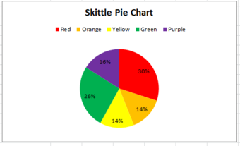{kind=link}
This pie chart shows the frequency distribution of a bag of Skittles.
4.2.6. Summation Notation
In statistical formulas that involve summing numbers, the Greek letter sigma is used as the summation notation.
Learning Objective
Discuss the summation notation and identify statistical situations in which it may be useful or even essential.
Key Points
- There is no special notation for the summation of explicit sequences (such as $1+2+4+2$ ), as the corresponding repeated addition expression will do.
- If the terms of the sequence are given by a regular pattern, possibly of variable length, then the summation notation may be useful or even essential.
- In general, mathematicians use the following sigma notation: $\sum_{i=m}^{n}a_{i}$ , where $m$ is the lower bound, $n$ is the upper bound, $i$ is the index of summation, and $a_i$ represents each successive term to be added.
Key Terms
- summation notation
- a notation, given by the Greek letter sigma, that denotes the operation of adding a sequence of numbers
- ellipsis
- a mark consisting of three periods, historically with spaces in between, before, and after them " . . . ", nowadays a single character " (used in printing to indicate an omission)
Summation
Many statistical formulas involve summing numbers. Fortunately there is a convenient notation for expressing summation. This section covers the basics of this summation notation.
Summation is the operation of adding a sequence of numbers, the result being their sum or total. If numbers are added sequentially from left to right, any intermediate result is a partial sum, prefix sum, or running total of the summation. The numbers to be summed (called addends, or sometimes summands) may be integers, rational numbers, real numbers, or complex numbers. Besides numbers, other types of values can be added as well: vectors, matrices, polynomials and, in general, elements of any additive group. For finite sequences of such elements, summation always produces a well-defined sum.
The summation of the sequence $[1, 2, 4, 2]$ is an expression whose value is the sum of each of the members of the sequence. In the example, $1+2+4+2= 9$ . Since addition is associative, the value does not depend on how the additions are grouped. For instance $(1+2)+(4+2)$ and $1+((2+4)+2)$ both have the value $9$ ; therefore, parentheses are usually omitted in repeated additions. Addition is also commutative, so changing the order of the terms of a finite sequence does not change its sum.
Notation
There is no special notation for the summation of such explicit sequences as the example above, as the corresponding repeated addition expression will do. If, however, the terms of the sequence are given by a regular pattern, possibly of variable length, then a summation operator may be useful or even essential.
For the summation of the sequence of consecutive integers from 1 to 100 one could use an addition expression involving an ellipsis to indicate the missing terms: $1+2+3+4+\dots + 99+100$ . In this case the reader easily guesses the pattern; however, for more complicated patterns, one needs to be precise about the rule used to find successive terms. This can be achieved by using the summation notation "$\Sigma$ " Using this sigma notation, the above summation is written as:
In general, mathematicians use the following sigma notation: $\displaystyle \sum_{i=m}^{n}a_{i}$
In this notation, $i$ represents the index of summation, $a_i$ is an indexed variable representing each successive term in the series, $m$ is the lower bound of summation, and $n$ is the upper bound of summation. The "$i=m$ " under the summation symbol means that the index $i$ starts out equal to $m$ . The index, $i$ , is incremented by 1 for each successive term, stopping when $i=n$ .
Here is an example showing the summation of exponential terms (terms to the power of 2):
Informal writing sometimes omits the definition of the index and bounds of summation when these are clear from context, as in:
$\displaystyle \sum a_{i}^{2}=\sum_{i=1}^{n}a_{i}^{2}$
One often sees generalizations of this notation in which an arbitrary logical condition is supplied, and the sum is intended to be taken over all values satisfying the condition. For example, the sum of $f(k)$ over all integers $k$ in the specified range can be written as: $\displaystyle \sum_{0\leq k }$
The sum of $f(x)$ over all elements $x$ in the set $S$ can be written as: $\displaystyle \sum_{x\epsilon S}f(x)$
4.2.7. Graphing Bivariate Relationships
We can learn much more by displaying bivariate data in a graphical form that maintains the pairing of variables.
Learning Objective
Compare the strengths and weaknesses of the various methods used to graph bivariate data.
Key Points
- When one variable increases with the second variable, we say that x and y have a positive association.
- Conversely, when y decreases as x increases, we say that they have a negative association.
- The presence of qualitative data leads to challenges in graphing bivariate relationships.
- If both variables are qualitative, we would be able to graph them in a contingency table.
Key Terms
- bivariate
- Having or involving exactly two variables.
- contingency table
- a table presenting the joint distribution of two categorical variables
- skewed
- Biased or distorted (pertaining to statistics or information).
Introduction to Bivariate Data
Measures of central tendency, variability, and spread summarize a single variable by providing important information about its distribution. Often, more than one variable is collected on each individual. For example, in large health studies of populations it is common to obtain variables such as age, sex, height, weight, blood pressure, and total cholesterol on each individual. Economic studies may be interested in, among other things, personal income and years of education. As a third example, most university admissions committees ask for an applicant's high school grade point average and standardized admission test scores (e.g., SAT). In the following text, we consider bivariate data, which for now consists of two quantitative variables for each individual. Our first interest is in summarizing such data in a way that is analogous to summarizing univariate (single variable) data.
By way of illustration, let's consider something with which we are all familiar: age. More specifically, let's consider if people tend to marry other people of about the same age. One way to address the question is to look at pairs of ages for a sample of married couples. Bivariate Sample 1 shows the ages of 10 married couples. Going across the columns we see that husbands and wives tend to be of about the same age, with men having a tendency to be slightly older than their wives.
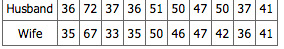{kind=link}
Sample of spousal ages of 10 white American couples.
These pairs are from a dataset consisting of 282 pairs of spousal ages (too many to make sense of from a table). What we need is a way to graphically summarize the 282 pairs of ages, such as a histogram. as in .
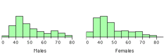{kind=link}
Histogram of spousal ages.
Each distribution is fairly skewed with a long right tail. From the first figure we see that not all husbands are older than their wives. It is important to see that this fact is lost when we separate the variables. That is, even though we provide summary statistics on each variable, the pairing within couples is lost by separating the variables. Only by maintaining the pairing can meaningful answers be found about couples, per se.
Therefore, we can learn much more by displaying the bivariate data in a graphical form that maintains the pairing. shows a scatter plot of the paired ages. The x-axis represents the age of the husband and the y-axis the age of the wife.
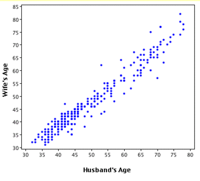{kind=link}
Scatterplot showing wife age as a function of husband age.
There are two important characteristics of the data revealed by this figure. First, it is clear that there is a strong relationship between the husband's age and the wife's age: the older the husband, the older the wife. When one variable increases with the second variable, we say that x and y have a positive association. Conversely, when y decreases as x increases, we say that they have a negative association. Second, the points cluster along a straight line. When this occurs, the relationship is called a linear relationship.
Bivariate Relationships in Qualitative Data
The presence of qualitative data leads to challenges in graphing bivariate relationships. We could have one qualitative variable and one quantitative variable, such as SAT subject and score. However, making a scatter plot would not be possible as only one variable is numerical. A bar graph would be possible.
If both variables are qualitative, we would be able to graph them in a contingency table. We can then use this to find whatever information we may want. In , this could include what percentage of the group are female and right-handed or what percentage of the males are left-handed.
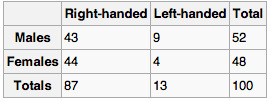{kind=link}
Contingency tables are useful for graphically representing qualitative bivariate relationships.